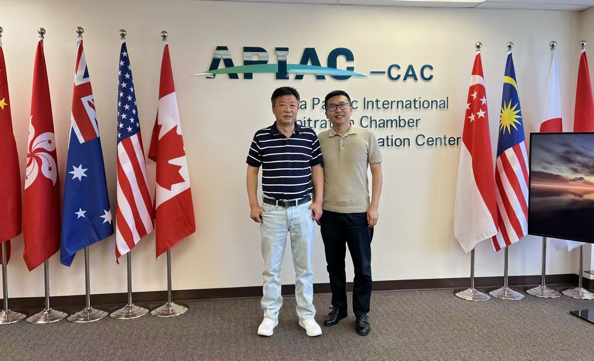
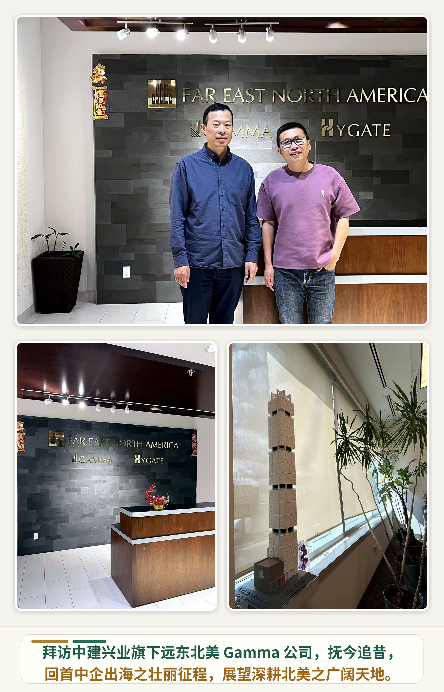
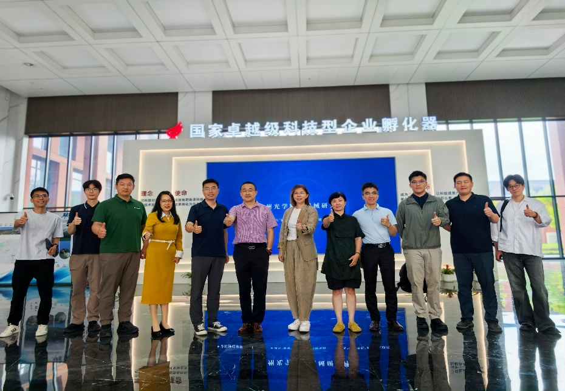

Enterprise
中企出海
面向具有明确产品、技术或服务方向的中国企业，先完成市场适配、政策风险和本地落地条件的初步判断。
![中国技术经济学会 CSTE Logo]()
立足北美，围绕科技创新、经济发展与跨境合作等关键议题，开展学术交流、行业研究与专业对话，为太平洋两岸的企业、机构和专业人士提供可信赖的本土视角，搭建连接知识、产业与社区的桥梁。
中国科协直属学会 · 学术引领创新发展
平台价值来自于学术深度、行业广度与本土视野。
中国技术经济学会(CSTE)成立于 1978 年，是中国技术经济领域的全国性科技社团组织。学会拥有 15,000+ 名会员、50个分支机构（含26个专业委员会）；代表处以学术组织身份运营，不背书、不代理，以事实与研究为基础提供判断。
从加拿大辐射北美，广泛整合中加美技术经济资源，中国国内创新生态圈层畅通直达。
从前瞻性市场研究到全周期项目管理，我们提供“研究—洞察—对接—陪跑”的全链条赋能。不贩卖空洞的结论，陪伴客户在真实的应用场景中，完成每一次关键的判断与决策。
在六大工作方向之上，CSTEAC 以三类项目入口承接需求：中企出海、华商回流、青年英才。每一项均对应独立申请表，便于后续评估、分流与跟进。
面向具有明确产品、技术或服务方向的中国企业，先完成市场适配、政策风险和本地落地条件的初步判断。
面向海外华商、地方政府、园区平台与 CSTE 分支机构，将华商资源、产业方向、项目阶段和落地建议整理为可持续跟进的招商项目池。
面向有意提升背景、获取实习实践、连接就业机会的留学生与青年人才，建立更可展示的项目履历和回国发展路径。
代表处为非营利机构，致力于成为中外交流的桥梁、纽带与催化剂。
依托 CSTE 学术资源，定期举办行业专题圆桌、闭门研讨会与线上博览会，推动中加产业与学术的深度对话。
以学术严谨度持续发布 EV 出海、AI 算力、绿色经济等专题深度报告，供会员及合作伙伴免费获取。
面向北美技术经济领域专家、学者与企业家开放海外会员申请，连接 CSTE 全球 15,000+ 会员资源网络。
学术交流、产业观察、创新实践三大模块，帮助留学生厘清方向、读懂产业、融入科技创新生态。
CSTEAC 与学术研究机构、产业与技术企业、专业服务机构及社区伙伴保持交流与合作，共同推动知识分享、产业连接与跨境项目实践。
技术经济领域的全国性学术组织，为代表处提供学术体系与专业网络基础。
访问官网 ↗聚焦投融资政策、公共治理与相关领域的研究交流。
访问官网 ↗围绕绿色金融、可持续投融资与相关政策研究开展交流。
访问官网 ↗围绕光学、精密机械及科技成果转化开展专业交流。
访问官网 ↗围绕光触媒技术、公共空间环境治理及跨区域应用开展交流。
访问官网 ↗连接环境产业研究、行业交流与生态合作资源。
访问官网 ↗围绕大数据、人工智能、数字化转型与企业增长开展交流。
访问官网 ↗围绕北美市场落地、合规准入、本地合作与产业协同开展交流。
访问官网 ↗围绕能源、电气产业与国际市场合作开展交流。
访问官网 ↗围绕新能源动力系统、技术应用与北美市场合作开展交流。
访问官网 ↗连接中欧汽车产业、技术企业与专业人士，推动行业对话和跨境协作。
访问官网 ↗围绕食品服务包装、环保包装选择、定制印刷与北美供应服务开展交流。
访问官网 ↗围绕光声成像、医疗科技及成果转化开展专业交流。
访问官网 ↗围绕AI眼镜、AI手表、AI耳机等智能穿戴产品与AI Agent应用生态开展交流合作。
访问官网 ↗成立于2025年，专注电子核心器件及高功率电磁波源技术研发，依托高校实验室等学术资源推进科技创新。
为跨境项目、企业合规及相关法律议题提供专业交流支持。
访问官网 ↗围绕企业合规、投融资及跨境业务相关法律议题开展专业交流。
访问官网 ↗围绕加拿大移民规划、身份合规及复杂个案处理提供专业交流支持。
访问官网 ↗连接卑诗省法语社群、企业发展、人才与社区经济合作资源。
访问官网 ↗以社区化交流空间连接科学家、企业家、投资人与创新项目，促进科技成果交流与转化。
围绕企业合规、跨境投资及相关法律议题开展专业交流。
访问官网 ↗围绕篆刻艺术、传统文化传播与国际文化交流开展合作。
访问官网 ↗连接科技企业家、创新项目与产业资源，推动创新创业交流与协作。
访问官网 ↗
中国技术经济学会(CSTE)成立于 1978 年，是中国技术经济领域的全国性科技社团组织。2026 年，CSTEAC 作为学会首家境外代表机构批准筹建，总部位于温哥华，以客观、中立、学术为立足点,致力于填平太平洋两岸的心理距离和信息壁垒。代表处的定位是非营利桥梁与催化剂——不以盈利为目的，以学术公信力推动中外信息流动、人才连接与产业协同。
按领域浏览与 CSTEAC 保持交流与合作的机构、企业、协会及专业服务伙伴。
CSTEAC 是中国技术经济学会在中国境外设立的首家代表机构，以学术背景、网络覆盖和本土连接能力服务中外学术与产业交流。
中国技术经济学会(CSTE)成立于 1978 年，是中国技术经济领域的全国性科技社团组织，长期致力于技术经济研究、学术交流和产学研协作。中国技术经济学会北美代表处的设立，是学会国际化发展中的重要一步。作为一个立足北美、面向技术经济、创新与应用研究的非营利学术与专业赋能平台，CSTEAC 希望在不同国家、不同文化、不同专业背景的人群之间，搭建一个多元化的交流空间。
我们深知，真正有价值的国际合作，不是从交易开始，而是从理解、信任和共同关注的问题开始。北美有成熟的法律体系、专业标准、社区文化和产业生态。CSTEAC 在这里开展工作，首先要做的是了解本地、尊重本地、融入本地，并在此基础上推动研究交流、专业学习和跨区域互信与合作。
CSTEAC 不是商业中介，也不是政治组织。我们的工作重点，是围绕技术经济、科技创新、产业发展、教育、健康、社区与可持续发展等议题，组织研讨、研究、对话和专业交流。我们希望连接研究人员、企业家、专业人士、社区伙伴和青年才俊，帮助大家在事实和研究的基础上提出更好的问题，形成更稳健的合作基础。
未来，CSTEAC 将坚持合规运营的原则，持续推动中加、中美及全球范围内在技术经济领域的知识交流与专业合作。我们也期待与更多本地机构、商会、学术组织、企业和社区伙伴建立长期、真诚、务实的联系。
在改革开放初期应运而生，成为中国技术经济领域的核心学术平台。
获批成为 CSTE 首家境外代表机构，总部位于加拿大卑诗省。
首期聚焦中国电动车进入加拿大市场，发布系列研究报告与圆桌论坛。
更多季度活动安排即将公布。
不替任何机构背书，不承诺商业结果，不做销售代理。价值来自信息的准确，而非立场的倾向。
所有建议以可核验的事实与数据为基础，拒绝模糊判断和主观预测，让客户在信息充分的状态下决策。
不追求短期撮合，专注于帮助客户建立可持续的市场能力与合作网络，陪伴长期发展而非一次性合同。
既服务于中企出海，也服务于希望与中国建立连接的北美机构，构建真正对等的双向产业桥梁。
研究的终点是行动，而不是报告。我们的服务以客户在真实场景中完成落地为检验标准。
依托 CSTE 的学术资源与方法论，将产业分析提升至学术严谨度，确保结论的可重复性与可验证性。
同时具备学术背景、产业网络、本地资源的赋能型服务平台。
以学术机构而非商业公司身份运营，天然具备更高的中立可信度，适合敏感市场环境下的顾问角色。
核心团队常驻温哥华，深度嵌入北美本地产业、政府与学术网络，提供有真实本地支撑的服务。
不做大而全的泛化咨询，集中资源在最具战略价值的产业议题上建立深度认知与资源积累。
同时面向来自不同专业、文化及行业背景的人群，既帮助中国学术及产业人群进入北美，也帮助北美机构及个人理解并融入中国的产学研用生态圈。
代表处为非营利机构，致力于成为中外交流的桥梁、纽带与催化剂。
CSTEAC 以六大工作方向构建长期能力框架，并围绕三类核心场景设立项目入口：中企出海、华商回流、青年英才。
代表处将根据来访方的项目阶段、资源需求与合作边界，完成初步研判与方向匹配，再视需要免费引荐经审核的战略合作伙伴，进入专业服务环节。
围绕技术经济、产业升级与跨境协作议题，组织论坛、圆桌、闭门研讨与专题交流。
持续跟踪政策、产业链与区域机会，形成面向会员和合作机构的研究简报与专题报告。
基于项目需求识别合作对象、验证资源边界，并在必要时引荐经审核的专业服务伙伴。
连接北美专家、企业家、高校校友与社团组织，建设面向长期合作的会员网络。
面向留学生与青年人才，链接产业认知、实习实践、就业发展与回国发展场景。
以文化交流、社区活动与公共沟通为纽带，增强代表处在北美本地网络中的可见度与信任基础。
适合需要市场判断、政策风险识别、闭门反馈和本地资源引荐的中国企业。
适合地方政府、园区与海外华商围绕项目来源、产业画像、政策需求和落地进度建立可视化跟进机制。
适合需要背景提升、实习实践、就业匹配和回国发展路径规划的留学生与青年人才。
面向合作城市与园区，CSTEAC 更适合提供定期更新的项目仪表盘与月度简报，帮助地方政府识别海外华商资源、筛选可落地项目，并安排后续对接、考察与政策支持。
每月面向合作城市形成一份轻量但可执行的简报，用项目语言呈现海外华商画像、热点产业、项目清单、对接建议与下一步活动安排。
本月新增海外华商数量
涉及国家、城市与社群节点
最活跃产业方向与技术主题
有回流意向的企业与团队
有出海需求的中国企业
适合本地园区落地的项目
需要政策支持或场景开放的项目
适合安排线下考察的项目
已进入实质对接的项目进度
代表处作为 CSTE 非营利学术机构，以下六大方向均为公益性工作。需要专业服务的个人与机构，代表处可免费引荐经审核的战略合作伙伴。
Academic Forums & Industry Seminars
依托 CSTE 学术资源，定期举办行业专题圆桌、闭门研讨会与线上博览会，促进中加产业与学术的深度对话，推动学术成果转化与产业落地。
Research Publications & Industry Insights
以学术严谨度持续发布聚焦中加产业互动的深度研究报告、政策简报与市场分析，供会员及合作伙伴免费获取。
Cross-Border Industry Connections & Referrals
代表处服务三类群体，均以中立学术立场提供市场研究、合规路径与资源连接支持，需要专业执行的项目可免费引荐战略合作伙伴。
Overseas Membership & Community Network
面向北美各大城市的技术经济领域专家、学者与企业家，开放海外会员申请，连接 CSTE 全球 15,000+ 会员资源网络与 50个分支机构的学术合作关系。
Overseas Talent & Innovation Practice Program
面向北美中国留学生与青年才俊，搭建以产业认知、学术交流、职业发展、创新实践为核心的非中介型平台。代表处不做求职辅导或背景包装，而是帮助青年人看懂真实产业、接触专业人士、形成清晰的发展方向。
Multicultural Exchange
以文化为纽带，推动中外人文交流，提升学会及代表处在北美的影响力与可见度，以非商业方式建立跨族裔交流网络。
无论您代表机构还是个人，均欢迎联系代表处。
通过联系页面填写简要背景，说明您的需求或希望参与的方向
代表处在 1–2 个工作日内回复，安排视频或电话初步交流
根据您的背景与需求，匹配最适合的工作方向或活动邀请
视需要引荐战略合作伙伴或邀请参与论坛、研讨会等活动
符合条件的个人与机构可申请成为 CSTE 北美会员，接入全球资源网络
CSTEAC 围绕三大入口持续发布中企出海、华商回流、青年英才与综合政策观察，帮助来访方先建立判断，再提交更具体的合作需求。
代表处及会员的最新活动、专业交流与公共参与动态。

CSTEAC刘世坚主任近日拜访了位于温哥华的亚太国际仲裁院（APIAC）加拿大仲裁中心。该中心成立于2024年2月，是APIAC体系在北美设立的首个仲裁机构，依托加拿大成熟的法律体系，为区域内跨境贸易与投资相关方提供国际商事仲裁服务。
双方就中加经贸往来持续扩大背景下对高效、中立争议解决机制的需求进行了交流，并就信息共享以及支持北美国际仲裁生态建设等潜在合作方向初步探讨了想法。
CSTEAC将持续帮助进入北美市场的中国企业对接当地法律与制度资源，妥善管控商业风险。

2026年7月10日，中国技术经济学会北美代表处主任刘世坚走访中建兴业旗下远东北美 Gamma 公司。双方围绕中国企业在北美市场拓展过程中的落地路径、合规准入、本地化合作及产业协同等议题进行了交流。
交流中，双方结合北美市场环境与企业实践，就中国企业“走出去”过程中普遍关注的市场进入、合作对接、合规要求与本地资源整合等问题交换了看法。此次走访也使 CSTEAC 对企业在北美推进产业连接、拓展合作网络和提升本地化能力的成功经验和实际需求有了更具体的了解。
作为面向中企出海、华商回流与外资入华的技术经济智识平台，CSTEAC 持续关注中国企业国际化发展中的市场研究、合规路径设计、本地合作模式搭建与试点项目验证等议题。未来，CSTEAC 将继续联合各方专业资源，围绕市场准入、监管合规、本地合作与产业协同等方向，提供中立、专业的研究支持与交流平台。
近日，CSTEAC 的合作伙伴EBS株式会社（Easy Business Solutions Co., Ltd.）分享了一段日本公共交通场景中的光触媒产品应用的视频报道内容。报道展示了EBS相关光触媒涂层技术在佐渡汽船船舱内的施工应用：工作人员对船内墙面、扶手、座椅周边等高频接触区域进行涂层处理，用于辅助实现抗病毒、抗菌与消臭，提升乘客出行环境的安全性与舒适度。
根据EBS官网介绍，其光触媒技术可在光能作用下分解病毒、杂菌、异味源及部分有害物质，应用场景覆盖学校、幼儿园、养老及医疗护理设施、商业设施、办公及工厂空间、交通工具、酒店餐饮、卫生间、吸烟室等多类公共与商业空间。
该案例及视频中提供的其他应用示例，体现了EBS产品在不同场景中的落地能力，也在公共卫生、绿色环境治理和可持续空间管理方面，为CSTEAC的合作伙伴、会员企业关注提供了具有参考价值的实践样本。
CSTEAC合作伙伴（李平，中国篆刻网创始人、西泠印社会员）长期深耕中国传统文化的传承、教育与国际传播工作，尤其在书法、篆刻、金石艺术等领域持续开展创作研究、展览评审、教学培训和跨地域文化交流。
其参与的西泠印社相关活动、中日篆刻艺术展、香港与内地艺术交流、广州美术学院授课及青年学生传统技艺教学等实践，体现了中华优秀传统文化从专业艺术圈层走向公众教育、国际对话与青年传承的过程。
未来，CSTEAC将结合自身在中外科技、产业、教育与文化交流方面的平台优势，进一步支持合作伙伴推动中国传统文化的国际化表达，促进中外文化理解互鉴，为中国故事的海外传播和民间交流搭建更具持续性的合作桥梁。

2026年6月15日，恩盈创新国际智库牵头新国际化合作共同体（NICC）举办的“新国际化合作走进杭州光机所”专场交流会在杭州光学精密机械研究所举行。活动围绕跨境合规、硬科技成果转化、产业基金协同、算力产业场景与企业出海模式等议题展开。
中国技术经济学会北美代表处（CSTEAC）主任刘世坚受邀分享代表处工作进展，以及中国与北美双向合作服务生态建设规划。他介绍，CSTEAC 作为立足北美、面向技术经济、创新与应用研究的非营利学术与专业交流平台，致力于在不同国家、文化与专业背景之间建立多元交流空间。
刘世坚强调，真正有价值的国际合作不是从交易开始，而是从理解、信任与共同关注的问题开始。未来，CSTEAC 将坚持合规运营，持续推动中加、中美及更广泛北美地区在技术经济领域的知识交流、专业学习与长期合作。
2026年5月27日，中国技术经济学会北美代表处主任刘世坚（Jason Liu）与副主任苏伟祺（Wicky Su）受邀出席由卑诗省法语社群经济发展会（Société de développement économique de la Colombie-Britannique，SDECB）主办的亚裔企业领袖圆桌会议——一场庆祝2026年亚裔传统月（Asian Heritage Month 2026）的特别活动。
活动汇聚卑诗省各界亚裔商界领袖，围绕跨文化经贸合作与亚裔社群对本地经济的贡献展开交流。代表处借此契机进一步拓展了在加拿大本地的合作网络，深化与本地机构和商界的联系。
如有任何疑问或需预约咨询，欢迎随时联系我们。
欢迎社会各界垂询合作
11920 Forge Pl #155, Richmond, BC V7A 4V9
东城区南竹竿胡同2号1幢C座 30917-18室（100010）
周一至周五 · 9:00–18:00（太平洋时间）